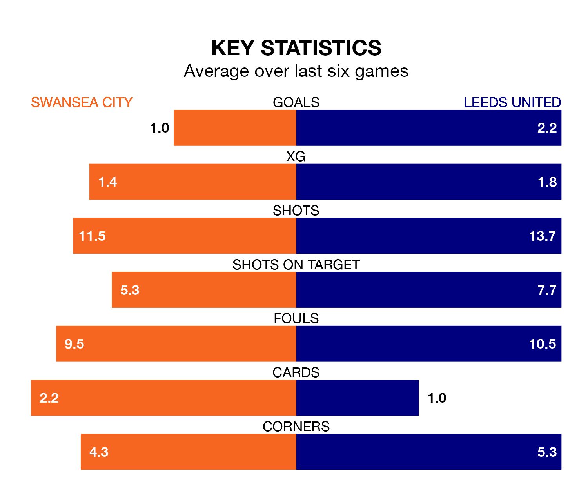

Leeds United are strong favourites to take all three points despite Swansea City's home advantage in Tuesday's late match at the Swansea.com Stadium.
*Betting Company* are offering odds of 1.53 on Leeds sealing the win, with the visitors sitting third in EFL Championship table.
Swansea, who are 16th in the league and 27 points behind Leeds, are priced at 5.5 to win. A draw is set at 4.47.
Swansea are in mixed form in EFL Championship, with two wins and a draw from their last six games.
With six wins and no losses over that period, Leeds's form is much better – they have taken 18 points from 18, compared to City's seven.
With 55 goals in 31 games so far this season, United are the league's joint-third-highest scorers with 1.8 goals per game. And they are conceding fewer than average, letting in 26 goals at a rate of 0.8 per game.
The Swans, meanwhile, are below average scorers, with 1.3 goals per game, compared to a league average of 1.4. They have conceded 1.5 goals per game.
With Illan Meslier between the sticks, the away side can rely on one of the league's safest pair of hands. He has kept 12 clean sheets in his 29 appearances this season, and only one other 'keeper – West Bromwich Albion's Alex Palmer – has been able to prevent the opposition scoring on more occasions in EFL Championship.
In the hosts' net, Carl Rushworth has six clean sheets in 31 games. He has conceded a goal every 62 minutes, twice as often as the 123 minutes between goals for Meslier.
In the last five years, Swansea and Leeds have played each other on four occasions. Swansea won one of them and Leeds the other.
On average, the Swans scored 0.8 goals and Leeds 1.5 in those matches.
Their last meeting was on November 29, when Leeds won 3-1 at home.
Swansea's last match was on Saturday, a 1-0 win against Hull City, with Liam Cullen getting the goal for the Swans.
Leeds beat Rotherham United 3-0 last time out, also on Saturday, with Crysencio Summerville (two) and Patrick Bamford on the scoresheet.
Tuesday's match will be refereed by David Webb, who has taken charge of 20 EFL Championship games so far this season, issuing one red card and booking 88 players. He has awarded three penalties.
The last Swansea game Webb refereed was a 1-1 away draw with Stoke City on December 12. His last Leeds match was their 2-1 win at home against Preston North End on January 21.
Updated: 09:02 (UTC), 13/02/24